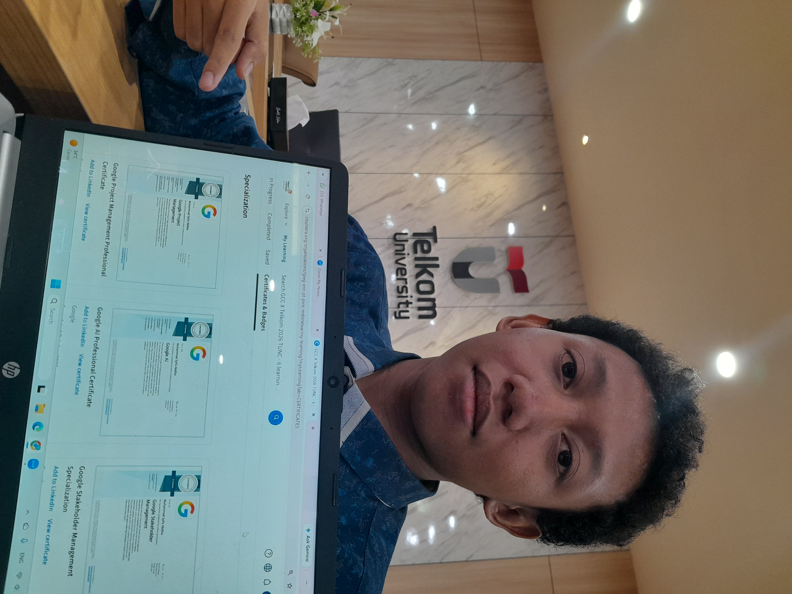

Business Strategy
Aktif merancang model bisnis, validasi pasar, serta solusi strategis dalam berbagai kompetisi bisnis.

Portofolio Mahasiswa
Muhammad Syifa Abdika
NIM 108052530009
Mahasiswa Sistem Informasi dengan sertifikasi Google Career Certificate in Project Management yang berfokus pada pengembangan produk digital dan strategi bisnis. Berpengalaman mengelola proyek serta aktif berkompetisi dalam berbagai ajang business model canvas dan business plan.
Lihat Portofolio Hubungi SayaAktif merancang model bisnis, validasi pasar, serta solusi strategis dalam berbagai kompetisi bisnis.
Tersertifikasi oleh Google dalam merencanakan, mengeksekusi, dan mengelola proyek digital menggunakan metodologi Agile dan Scrum.
Menjembatani kebutuhan bisnis dengan pengembangan teknologi dan sistem informasi yang efektif dan terukur.